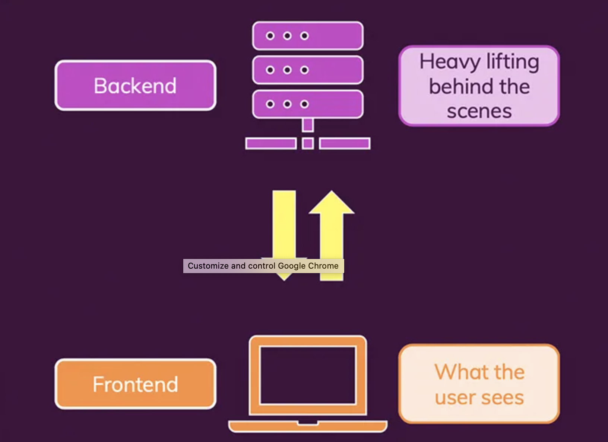
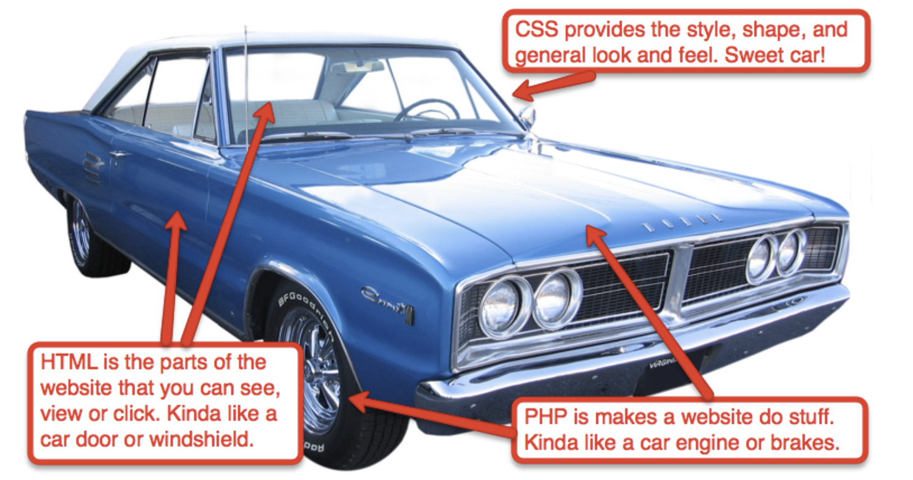
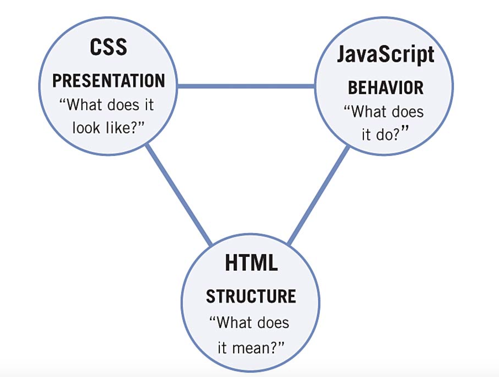

Today, we will continue our journey on implementing a smart doorbell. We're going to make the doorbell listen to the visitors and transcribe what they are saying. In addition, we will integrate our code for motion detection from day3 into our video feed.
Before doing so, we need a bit more knowledge about web development.

Websites usually consist of two parts: the front-end and the back-end. The front-end is the side which users experience. It is responsible for how a page looks, responds, and appears when a user opens up a website and interact with the elements on the page. HTML, CSS, and JavaScript are the building blocks of front-end development. They can be rendered, presented, and executed on every browser and ensure the browsing experience for 1 billion websites and 5 billion users.
On the contrary, the back-end is the guts of the web application, containing inner logic and structures and living on the server. The back-end stores, processes, and serves program and user data to ensure that the front-end has what it needs. For our project, we were mainly working on the back-end, i.e. the logic to capture camera frames and to create video feed. In addition to Python, back-end developers use programming languages like Java, PHP, and Ruby to work with data.
However, the front-end of our project is so far very simple - we don't have interactive elements like buttons but only an image that doesn't fit the size of the screen well. So today, we will make our website look nicer while adding interactions and more functionalities to it.
Yesterday, we created two HTML documents. HTML is a markup language that tells web browsers the structure and content of the web pages. These documents will be readable in a browser. They are, however, very ugly and of basic style by default. For a better look, we need to design the style and layout of the elements. We could do so by adding style attribute to HTML tags, for example,
xxxxxxxxxx<img class="camera-bg" src="{{ url_for('video_feed') }}" style="width: 100%; height: 100%;">would fill our camera frame to the entire page. However, adding style attribute to every HTML tag is often tedious and will make the HTML file long and messy. Moreover, oftentimes we want not only to style one single element but also to make a group or class of elements having the same style.
This is where CSS (Cascading Style Sheets) becomes handy. CSS is designed to style and lay out web pages. You can use it to alter the font, color, size, and spacing of your content, split it into multiple columns, or even add animations. CSS is rule-based — you define the rules by specifying groups of styles that should be applied to particular elements or groups of elements on your web page.
For example, you can decide to have the main heading on your page to be shown as large red text. The following code shows a very simple CSS rule that would achieve the styling described above:
xxxxxxxxxxh1 { color: red; font-size: 5em;}<h1>).{ }.color in the above example) before the colon, and we specify the value of the property after the colon (red in this example).color and the other for font-size. Each pair specifies a property of the element(s) we are selecting (<h1> in this case), then a value that we'd like to give the property.CSS properties have different allowable values, depending on which property is being specified. In our example, we have the color property, which can take various color values. We also have the font-size property. This property can take various size units as a value. You can find links to all the CSS property pages (along with other CSS features) listed on the MDN CSS reference.
CSS selectors are designed to select HTML elements in a flexible way. In the example above, we used a basic selector that directly matches all the elements by their tag name (<h1>). We can also target multiple selectors at the same time by separating the selectors with a comma. If you want all paragraphs and all list items to be green, your rule would look like this:
xxxxxxxxxxp, li { color: green;}Instead using comma, you may also put a space between two selectors. This is called the descendant combinator, which selects an element following a hierarchy. For example, to select an <em> that is nested inside an <li> element,
xxxxxxxxxxli em { color: rebeccapurple;}We also need some ways more specific than general tag names. One option is to use #id selector that links to a unique element, say the element with id="firstname":
xxxxxxxxxx#firstname { background-color: yellow;}You can also select elements of a certain class by creating a selector that starts with a full stop character. For instance, to target the class of special you could do:
xxxxxxxxxx.special { color: orange; font-weight: bold;}Sometimes you will see rules with a selector that lists the HTML element selector along with the class:
xxxxxxxxxxli.special { color: orange; font-weight: bold;}This syntax means "target any li element that has a class of special".
Finally, CSS has the ability to style things based on their state. The CSS below styles unvisited links pink and visited links green.
xxxxxxxxxxa:link { color: pink;}
a:visited { color: green;}You may notice we listed two CSS rules at the same time. This formed a simple CSS stylesheet. A CSS stylesheet in real-life will contain many such rules, written one after the other.
There are three different ways to apply CSS rules to an HTML document that you may come across, however, for this tutorial, we will look at the most usual and useful way of doing so — linking CSS stylesheets from the head of your document.
The first thing you need to do is to save the CSS stylesheet you created to a CSS file, say style.css. To link styles.css to a HTML document, add the following line somewhere inside the <head> of the HTML document:
xxxxxxxxxx<head>...<link rel="stylesheet" href="style.css">...</head>This <link> element tells the browser that we have a stylesheet, using the rel attribute, and the location of that stylesheet as the value of the href attribute. You can link multiple stylesheets and they will influence the document's style in a "cascading" way:
xxxxxxxxxx<head>...<link rel="stylesheet" href="style1.css"><link rel="stylesheet" href="style2.css">...</head>Now we’ve learned marking up content as HTML documents and using CSS to style them. However, HTML and CSS are both declarative languages specifying how to display content. They are static and cannot react to users’ action. So how can we handle users’ input and dynamically change the page’s content based on available data? The answer is JavaScript, a programming language that browsers understand and that controls the interactivity on the page.
JavaScript is versatile yet beginner-friendly. Being a script language, it’s similar to Python to some extent. We will cover only a little bit on the language, just so you can understand the code we will use today.
In JavaScript, you declare a variable with the let keyword, followed by the name you give to the variable:
xxxxxxxxxxlet myVariable;A semicolon at the end of a line indicates where a statement ends. Like Python, you can assign a value or expression to the variable when declaring it:
xxxxxxxxxxlet myVariable = 'Bob';Declaring a function is also similar to Python. Instead of def, you use function. And you use curly braces rather than a colon and indentations:
xxxxxxxxxxfunction multiply(num1,num2) { let result = num1 * num2; return result;}There are four basic data types in JavaScript: string, number, boolean, and array. They are self-explanatory. Other than these, everything in JavaScript is an object, which can be seen as a collection of properties and functions. You can access the properties or functions by the form objectName.propertyNameor objectName.functionName. For example, document is a very important object that represents the whole HTML document you’re visiting. It consists of a bunch of properties, such as document.lastModified which is the date on which document was last modified. It also has a variety of functions (called methods.) One of the most useful ones is document.getElementById() which returns the element of certain id on the page. Through document object, JavaScript enables interactivity for the webpage.
To use JavaScript, you enter this code on a new line, just before the closing </body> tag in the HTML document:
xxxxxxxxxx<script src="scriptname.js"></script>This is doing the same job as the <link> element for CSS. It applies the JavaScript to the page, so it can have an effect on the HTML.


A doorbell can't be smart if the visitors can't speak to us. To fix this, we can easily implement audio live streaming using an HTML audio control just like how we streamed video. However, we like challenging ourselves and want our doorbell to be even smarter - it will recognize what they say and show us the transcript.
Sounds complicated? It's actually much easier than you thought, so let's get started.
We will first extend index.html in our camera_streamer project to support a navigation bar at the bottom where we can add a button and show some subtitle. We want to use the button to trigger audio recording and recognizing and use the subtitle to show transcription result.
To do so, let’s add a new <div> element to the <body>, with a <button> and a <span> of text in it:
xxxxxxxxxx<div class="navbar">
<button id="recordButton"> <i class="fa fa-microphone fa-2x"></i> </button>
<span id="subtitle"></span>
</div>In its current form, our navbar doesn’t remotely resemble a navigation bar that we see on other websites. We will use CSS to make it look fancier. Besides, we will make sure the camera feed scales correctly and fits into our screen.
To do so, let’s create a style.css file in the static folder and enter the following lines of code:
xxxxxxxxxx.navbar { overflow: hidden; position: fixed; bottom: 0; left: 0; width: 100%; margin: auto; background-color: black; opacity: 0.6; color: white;}
.navbar i { color: white; background: red;}
i.fa { display: inline-block; border-radius: 60px; box-shadow: 0px 0px 2px #888; padding: 0.5em 0.6em;}
button { background-color: transparent; background-repeat: no-repeat; border: none; cursor: pointer; overflow: hidden; outline: none;}
.camera-bg { background-color: dimgray; position: fixed; top: 0; left: 0;
height: 100%; width: 100%; object-fit: contain;}Don’t worry if you don’t understand the meaning of a particular property. You just need to go through it and see which elements the rules are targeting.
Now let’s save it and link it to the HTML file:
xxxxxxxxxx<link rel="stylesheet" href="{{ url_for('static', filename='style.css') }}" />We will also link another online CSS stylesheet, font-awesome, which provides us some useful icons we can use in our button:
xxxxxxxxxx<link rel="stylesheet" href="https://cdnjs.cloudflare.com/ajax/libs/font-awesome/4.7.0/css/font-awesome.min.css">In fact, the class names we specified above, fa fa-microphone fa-2x, refer to some rules defined in this stylesheet.
Our HTML’s <head> now looks like the following:
xxxxxxxxxx<head> <meta charset="utf-8" /> <title>Hello world!</title> <link rel="stylesheet" href="{{ url_for('static', filename='style.css') }}" /> <link rel="stylesheet" href="https://cdnjs.cloudflare.com/ajax/libs/font-awesome/4.7.0/css/font-awesome.min.css"></head>Now we have a pretty navigation bar. It’s time to define how the button and subtitle behave. Create a new file called "helper.js" in your static folder.
First, we get these elements in JavaScript:
xxxxxxxxxxlet recordButton = document.getElementById("recordButton");let recordButtonIcon = recordButton.firstElementChild;let subtitle = document.getElementById("subtitle");In the second line, recordButton.firstElementChild finds the <i> element inside the button, which is used to display icon. We select this element because we want to change the button’s icon during recording.
Next, let’s add an event listener to the button:
xxxxxxxxxxrecordButton.addEventListener("click", startListening);This means whenever an user clicks the button, the function startListening will be called, so we can react to the click using this function. We haven’t defined it yet, and let’s do it now.
xxxxxxxxxxfunction startListening() { //replace the microphone icon with a circle icon recordButtonIcon.classList.replace("fa-microphone", "fa-circle"); //disable the button to prevent misclick recordButton.disabled = true;
//set subtile to "listening..." subtitle.textContent = "Listening...";
//create a new GET request let xhr = new XMLHttpRequest(); xhr.open("GET", "listen", true); //call processResult when the result is ready xhr.onload = processResult; //send the request to /listen xhr.send();}We will also need to define the callback function processResult so that after our doorbell responded to our GET request and recognized a phrase, we would show the transcription in the subtitle:
xxxxxxxxxxfunction processResult(e) { //set the subtitle to the returned result subtitle.textContent = "Result: " + e.target.responseText;
//show the microphone icon again recordButtonIcon.classList.replace("fa-circle", "fa-microphone"); //re-enable the button recordButton.disabled = false;}That’s it! Let’s save it as helper.js in the static folder and link it to the HTML:
xxxxxxxxxx<script src="{{ url_for('static', filename='helper.js') }}"></script>So our final index.html will look like
xxxxxxxxxx<html>
<head> <meta charset="utf-8" /> <title>Hello world!</title> <link rel="stylesheet" href="{{ url_for('static', filename='style.css') }}" /> <link rel="stylesheet" href="https://cdnjs.cloudflare.com/ajax/libs/font-awesome/4.7.0/css/font-awesome.min.css"></head>
<body>
<div class="main" id="newpost"> <img class="camera-bg" src="{{ url_for('video_feed') }}"> </div>
<div class="navbar">
<button id="recordButton"> <i class="fa fa-microphone fa-2x"></i> </button>
<span id="subtitle"></span>
</div>
<script src="{{ url_for('static', filename='helper.js') }}"></script>
</body>
</html>Let’s move onto the back-end part. SpeechRecognition is a powerful Python library for performing speech recognition. In just a few lines, we will be able to detect a phrase and transcribe it.
As always, we fist need to import the library:
xxxxxxxxxximport speech_recognition as srThen we will initialize a Recognizer and a Microphone. We should use the Microphone instance as our audio source and caliberate it before we start listening:
xxxxxxxxxxrecognizer = sr.Recognizer()mic = sr.Microphone()with mic as source: # we only need to calibrate once, before we start listening recognizer.adjust_for_ambient_noise(source)Now, let's create a new function for transcribing audio captured by the microphone:
xxxxxxxxxxdef transcribe_audio(): with mic as source: audio = recognizer.listen(source) try: return recognizer.recognize_google(audio) except sr.UnknownValueError: return "Google Speech Recognition could not understand audio" except sr.RequestError as e: return "Could not request results from Google Speech Recognition service; {0}".format(e)The essential part is
xxxxxxxxxxwith mic as source: audio = recognizer.listen(source) return recognizer.recognize_google(audio)The rest is just for error handling (and no need to worry about.)
Note that SpeechRecognition supports several engines and APIs, such as Microsoft Bing Voice Recognition and CMU's Sphinx. In our case, we are using Google Speech Recognition API. You can find examples for using other engines here: https://github.com/Uberi/speech_recognition/blob/master/examples/microphone_recognition.py.
Copy these lines to a new Python script, run it locally, and see how it goes. Assuming it works well, now it's time to add them to main.py in the camera_streamer project we worked on. Make sure the import statement appears in the same place as other import statements, the initialization code goes right after other initializations, and the transcribe_audio function follows other functions.
We also need to add a new route to transcribe_audio, so our server can respond to the GET request sent by the JavaScript:
xxxxxxxxxx.route('/listen')def transcribe_audio():...There we go! Go to the terminal and run
xxxxxxxxxx$ python3 main.pyVisit the webpage the same way you did yesterday. You should notice the difference between styles and layout and be able to try the speech recognition feature by clicking the microphone button.
Finally, let’s incorporate our code for motion detection into our back-end. After this, we will be able to see motion alerts remotely on our video feed!
To do so, let’s copy the code from day3 and add a new function to main.py. But we have to add one more line this time: global reference_frame. This is just a trick to tell Python to use a global reference_frame variable instead of a local one.
xxxxxxxxxxdef detect_motion(image): global reference_frame min_area = 15 maybe_motion_text = "Not Detected"
current_frame = cv2.cvtColor(image, cv2.COLOR_BGR2GRAY) current_frame = cv2.GaussianBlur(current_frame, (21, 21), 0)
if reference_frame is None: reference_frame = current_frame
frame_delta = cv2.absdiff(reference_frame, current_frame) thresh = cv2.threshold(frame_delta, 25, 255, cv2.THRESH_BINARY)[1]
thresh = cv2.dilate(thresh, None, iterations=2) cnts = cv2.findContours(thresh.copy(), cv2.RETR_EXTERNAL, cv2.CHAIN_APPROX_SIMPLE) cnts = imutils.grab_contours(cnts)
for c in cnts: if cv2.contourArea(c) < min_area: continue (x, y, w, h) = cv2.boundingRect(c) cv2.rectangle(image, (x, y), (x+w, y+h), (0, 255, 0), 2) maybe_motion_text = "Detected"
cv2.putText(image, "Motion: {}".format(maybe_motion_text), (10, 20), cv2.FONT_HERSHEY_SIMPLEX, 0.5, (0, 0, 255), 2) cv2.putText(image, datetime.datetime.now().strftime("%A %d %B %Y %I: %M: %S%p"), (10, image.shape[0]-50), cv2.FONT_HERSHEY_SIMPLEX, 0.35, (0, 0, 255), 1) return imageAlso, we need to define the global variable for our reference frame (put it before the App Global):
xxxxxxxxxxreference_frame = NoneNow the only thing we need to do is to call the detect_motion function right after raw_capture.seek(0) in get_camera_frames().
For reference, the final main.py should look like this:
ximport flaskfrom flask import Flask, render_template, Response, requestfrom picamera.array import PiRGBArrayfrom picamera import PiCameraimport datetimeimport imutilsimport cv2import speech_recognition as sr
camera = PiCamera()camera.resolution = (640, 480)raw_capture = PiRGBArray(camera, size=(640, 480))
recognizer = sr.Recognizer()mic = sr.Microphone()with mic as source: recognizer.adjust_for_ambient_noise(source)
reference_frame = None
# App Global (do not edit)app = Flask(__name__)
.route('/')def index(): return render_template('index.html')
def detect_motion(image): global reference_frame min_area = 15 maybe_motion_text = "Not Detected"
current_frame = cv2.cvtColor(image, cv2.COLOR_BGR2GRAY) current_frame = cv2.GaussianBlur(current_frame, (21, 21), 0)
if reference_frame is None: reference_frame = current_frame
frame_delta = cv2.absdiff(reference_frame, current_frame) thresh = cv2.threshold(frame_delta, 25, 255, cv2.THRESH_BINARY)[1]
thresh = cv2.dilate(thresh, None, iterations=2) cnts = cv2.findContours(thresh.copy(), cv2.RETR_EXTERNAL, cv2.CHAIN_APPROX_SIMPLE) cnts = imutils.grab_contours(cnts)
for c in cnts: if cv2.contourArea(c) < min_area: continue (x, y, w, h) = cv2.boundingRect(c) cv2.rectangle(image, (x, y), (x+w, y+h), (0, 255, 0), 2) maybe_motion_text = "Detected"
cv2.putText(image, "Motion: {}".format(maybe_motion_text), (10, 20), cv2.FONT_HERSHEY_SIMPLEX, 0.5, (0, 0, 255), 2) cv2.putText(image, datetime.datetime.now().strftime("%A %d %B %Y %I: %M: %S%p"), (10, image.shape[0]-50), cv2.FONT_HERSHEY_SIMPLEX, 0.35, (0, 0, 255), 1) return image
def get_camera_frames(camera): for frame in camera.capture_continuous(raw_capture, format="bgr", use_video_port=True): image = frame.array raw_capture.truncate() raw_capture.seek(0)
image = detect_motion(image)
_, image = cv2.imencode(".jpg", image) yield (b'--frame\r\n' b'Content-Type: image/jpeg\r\n\r\n' + image.tobytes() + b'\r\n\r\n')
.route('/video_feed')def video_feed(): return Response(get_camera_frames(camera), mimetype='multipart/x-mixed-replace; boundary=frame')
.route('/listen')def transcribe_audio(): with mic as source: audio = recognizer.listen(source) try: return recognizer.recognize_google(audio) except sr.UnknownValueError: return "Google Speech Recognition could not understand audio" except sr.RequestError as e: return "Could not request results from Google Speech Recognition service; {0}".format(e)
if __name__ == '__main__': app.run(host='0.0.0.0', debug=False)